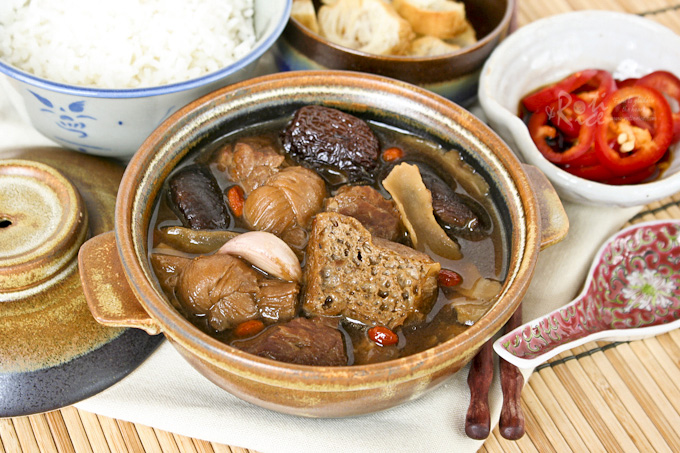

Odin Recipes | Bah Kut Teh

Bah Kut Teh
Bak Kut Teh in the Hokkien or Fujianese dialect literally translates to Pork Rib Tea. This rich herbal soup contains dong gui (Angelica Sinensis),
known for its warming properties. For this reason, it is popularly eaten as a supper or late night meal in Malaysia and Singapore.
Ingredients
- 10 cups water (2.5 liters)
- 1 packet Bak Kut Teh herbs (rinsed and drained)
- 3 slices Angelica Sinensis / Dong Gui (rinsed and drained)
- 12 Chinese mushrooms / shitake mushrooms (soaked, rinsed, and stalks removed)
- 2 tbsp vegetable oil
- 1 bulb garlic (separated but not peeled)
- 2 lbs baby back ribs or pork ribs, cut into bite-size pieces (900g)
- 2 tbsp dark soy sauce
- 1 piece rock sugar (10g)
- Salt to taste
- 12 small tofu puffs (cut into halves)
- 24 pieces tofu skin knots (rinsed, soaked for 20 minutes, drained) (optional)
- ¼ cup goji berries (rinsed and soaked for 10 minutes, drained (30g) (optional)
Instructions
- Bring water in a large pot to a boil.
- Place all bak kut teh herbs, except for spice sachet, Solomon’s seal rhizome (yok chok), and red or black dates in a muslin filter bag. Dong gui should also be placed in the muslin filter bag.
- When water comes to a boil, place muslin bag, spice sachet, yok chok, dates, and mushrooms in the water.
- Heat vegetable oil in a large fry pan. Add garlic and pork ribs. Sear ribs for about 3 minutes. Stir in dark soy sauce. Turn off heat and transfer pork ribs and garlic to huge pot.
- Add rock sugar. When liquid comes back to a boil, season with salt. Reduce heat to low and allow it to simmer for about 1½ hours.
- Add tofu puffs, tofu skin knots, and goji berries. Simmer for another 30 minutes.
- Discard muslin filter bag and spice sachet.
- Serve with steamed rice, yew char kway (aka as you tiao or Chinese crullers), and cut chilies in soy sauce.